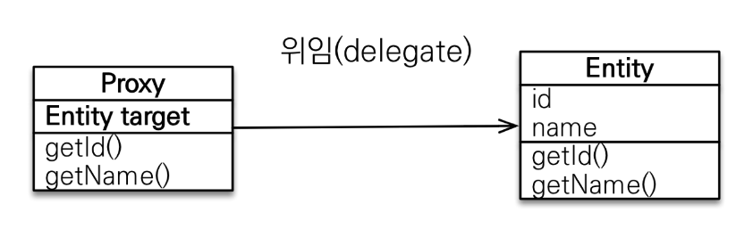
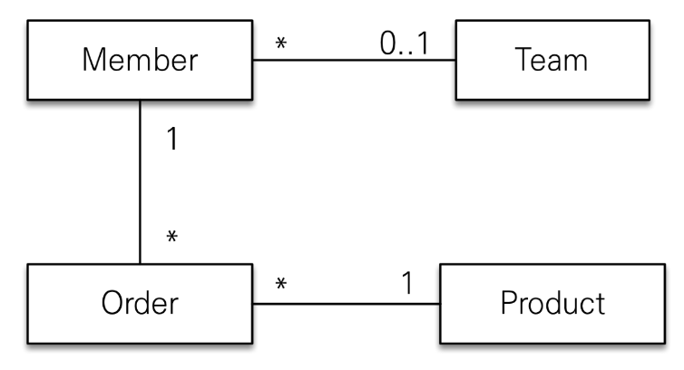
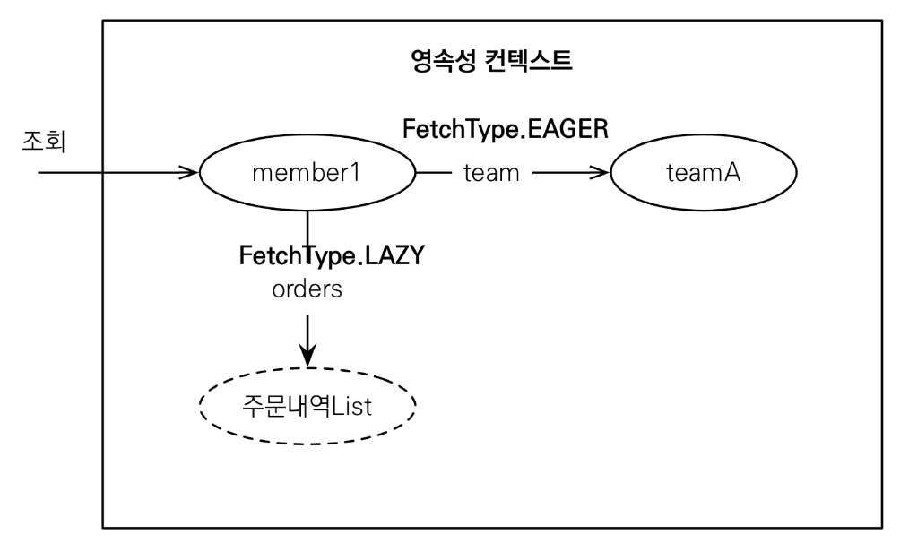
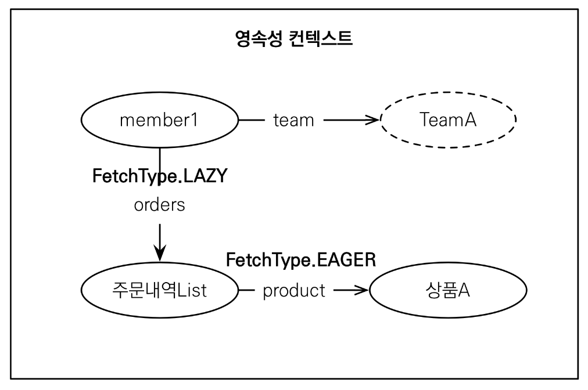
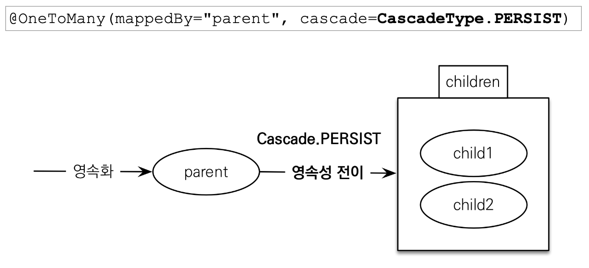

em.find() : 데이터베이스를 통해 실제 엔티티 객체를 조회em.getReference()
em.getReference() 시점에는 DB에 쿼리하지 않음
처음 사용되는 시점에 한 번만 초기화 됨
초기화 하면 실제 엔티티로 교체되는 것이 아니라 프록시 객체를 통해 실제 엔티티로 접근이 가능해짐 (1)
프록시 객체는 원본 엔티티를 상속받으므로 타입 체크시 주의해야 함
instance of 를 사용할 것
영속성 컨텍스트에 찾는 엔티티가 이미 있으면 getReference()를 호출해도 실제 엔티티가 반환됨 (2)
프록시 객체가 영속성 컨텍스트와 무관해질 경우(준영속 상태 or em 종료 등) 프록시 초기화를 시도하면 문제 발생
(1)과 (2)로 인해 하나의 트랜잭션 내에서 같은 기본 키로 엔티티를 조회할 때 동일성을 보장할 수 있게 됨
프록시 인스턴스 초기화 여부 확인
PersistenceUnitUtil.isLoaded(Object entity)프록시 클래스 확인 방법
entity.getClass().getName으로 클래스명 확인
프록시 강제 초기화
org.hibernate.Hibernate.initialize(entity)Team.getName() 등으로 실제 team을 사용하는 시점에 초기화(DB조회)
Member.getTeam() 하는 것으로는 DB에서 조회하지 않음
FetchType.Eager)를 사용해서 Member와 Team을 함께 조회
가급적 지연 로딩만 사용할 것
즉시 로딩 적용 시 예상하지 못한 SQL이 발생할 수 있음
즉시 로딩은 JPQL에서 N+1 문제를 발생시킴
@EntityGraph, @BatchSize 등으로 해결
일단 지연 로딩을 다 발라놓고 생각
@ManyToOne, @OneToOne은 즉시 로딩이 default이므로 지연로딩으로 설정@OneToMany, @ManyToMany는 지연 로딩이 default



모든 연관관계에 지연 로딩을 사용
실무에서 즉시 로딩을 사용하지 말 것
Child child1 = new Child();
Child child2 = new Child();
Parent parent = new Parent();
parent.addChild(child1);
parent.addChild(child2);
em.persist(parent);
// em.persist(child1);
// em.persist(child2);
cascade = CascadeType.ALL을 설정
em.persist(parent) 할 때 Parent.children이 참조하고 있는 child1, child2도 함께 영속화 하겠다는 의미
부모 엔티티와 연관관계가 끊어진 자식 엔티티
orpahRemoval = true
List.remove() 등으로 연관관계가 끊어지면 DELETE 쿼리 생성
특정 엔티티가 개인 소유할 때 사용
참조하는 곳이 하나일 때 사용해야 함
참고
CascadeType.REMOVE 처럼 동작
cascade = CascadeType.ALL, orpahnRemoval = true
직접 생명주기를 관리하는 엔티티는 em.persist()로 영속화, em.remove()로 제거
DDD의 Aggregate Root 개념 구현에 유용
@ManyToOne, @OneToOne을 직접 지연 로딩으로 설정해야 함
CascadeType.ALLCascadeType.ALL